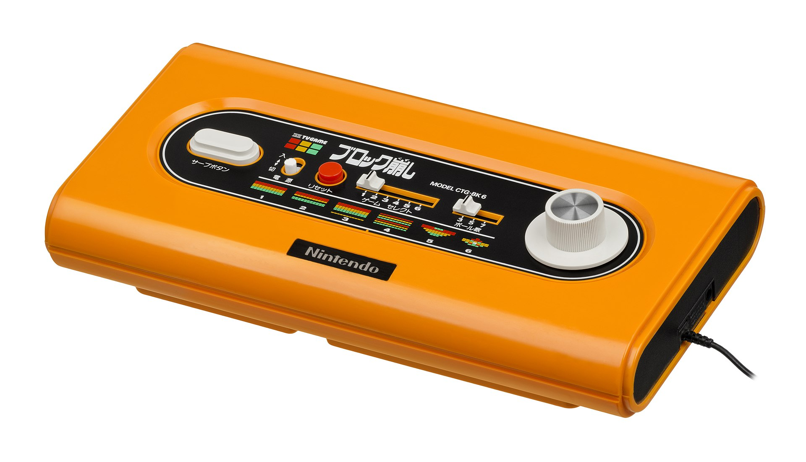
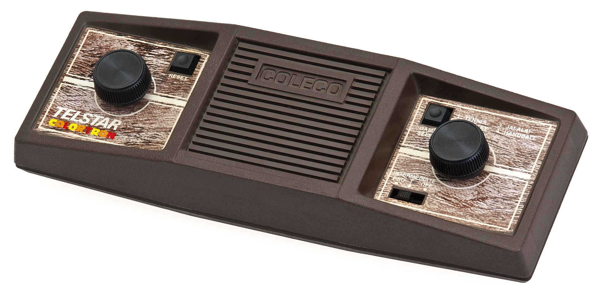
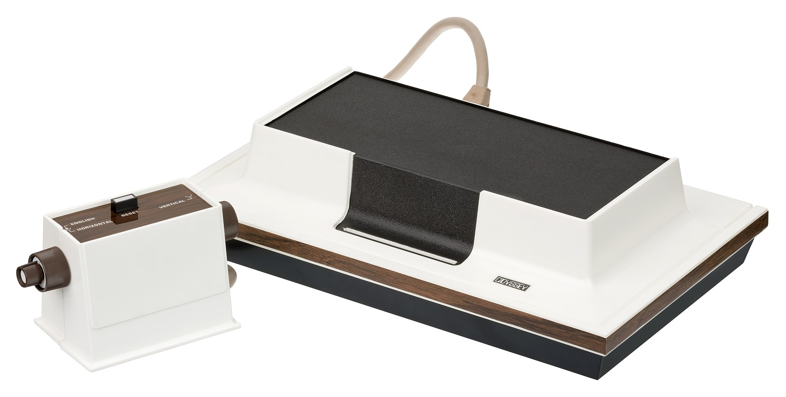
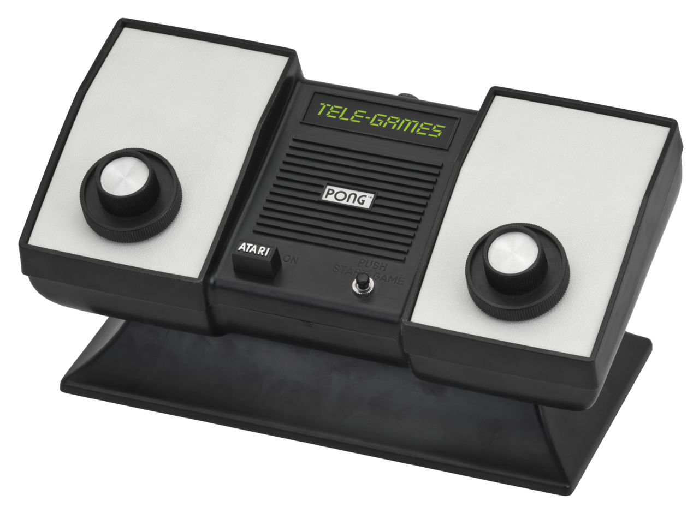
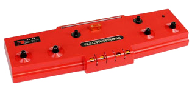

Color TV-Game

The Color TV-Game is a series of five dedicated home video game consoles created by
Nintendo that were released in Japan only. Nintendo sold three
million units of the first four models: one million units of each of the first two models, Color TV-Game
6 and 15; and half a million units of each of the next two models,
Block Breaker and Racing 112. The Color TV-Game series has the highest sales figures of all the first
generation of video game consoles. The systems can run on C batteries
or an AC adapter. It is also the first console to be released by Nintendo.
Coleco Telstar series
The Coleco Telstar brand is a series of dedicated first-generation home video game consoles produced, released and marketed by Coleco from 1976 to 1978. Starting with Coleco Telstar Pong clone based video game console on General Instrument's AY-3-8500 chip in 1976, there were 14 consoles released in the Coleco Telstar series. About one million units of the first model called Coleco Telstar were sold.
The large product lineup and the impending fading out of the Pong machines led Coleco to face near-bankruptcy in 1980.
Magnavox Odyssey
The Magnavox Odyssey is the first commercial home video game console. The hardware was designed by a small team led by Ralph H. Baer at Sanders Associates, while Magnavox completed development and released it in the United States in September 1972 and overseas the following year. The Odyssey consists of a white, black, and brown box that connects to a television set, and two rectangular controllers attached by wires. It is capable of displaying three square dots and one line of varying height on the screen in monochrome black and white, with differing behavior for the dots depending on the game played. Players place plastic overlays on the screen to display additional visual elements for each game, and the one or two players for each game control their dots with the knobs and buttons on the controller in accordance with the rules given for the game. The console cannot generate audio or track scores. The Odyssey console came packaged with dice, paper money, and other board game paraphernalia to accompany the games, while a peripheral controller—the first video game light gun—was sold separately.
The idea for a video game console was conceived by Baer in August 1966. Over the next three years he, along with Bill Harrison and Bill Rusch, created seven successive prototype consoles. The seventh, known as the Brown Box, was shown to several manufacturers before Magnavox agreed to produce it in January 1971. After releasing the console through their dealerships, Magnavox sold 69,000 units its first calendar year and 350,000 by the time the console was discontinued in 1975. The console spawned the Odyssey series of dedicated consoles as well as the 1978 Magnavox Odyssey 2. One of the 28 games made for the system, a ping pong game, was an inspiration for Atari's successful 1972 Pong arcade game, in turn driving sales of the Odyssey. Patents by Baer and the other developers for the system and the games, including what was termed by a judge as "the pioneering patent of the video game art", formed the basis of a series of lawsuits spanning 20 years, earning Sanders and Magnavox over US$100 million. The release of the Odyssey marked the beginning of the first generation of video game consoles and was an early part of the rise of the commercial video game industry.
Home Pong
After the success of Pong, Bushnell pushed his employees to create new products. A new electronic technology, the large-scale integration (LSI) chip, had recently become available, which Bushnell believed would "allow pioneering in new" game concepts. Atari began working on the reduction of Pong from a large arcade printed circuit board (PCB) down to a small LSI chip for use in a home system. The initial development cost for a game on a single LSI chip was expensive, costing around $50,000 (equivalent to $320,000 in 2020), but once the chip was developed, it became cheaper to mass-produce the game as well as more difficult to reverse-engineer.
In 1974, Atari engineer Harold Lee proposed a home version of Pong that would connect to a television: Home Pong. The system began development under the codename Darlene, named after an employee at Atari. Alcorn worked with Lee to develop the designs and prototype and based them on the same digital technology used in their arcade games. The two worked in shifts to save time and money; Lee worked on the design's logic during the day, while Alcorn debugged the designs in the evenings. After the designs were approved, fellow Atari engineer Bob Brown assisted Alcorn and Lee in building a prototype. The prototype consisted of a device attached to a wooden pedestal containing over a hundred wires, which was eventually be replaced with a single chip designed by Alcorn and Lee; the chip had yet to be tested and built before the prototype was constructed. The chip was finished in the latter half of 1974, and was, at the time, the highest-performing chip used in a consumer product.
Bushnell and Gene Lipkin, Atari's vice-president of sales, approached toy and electronic retailers to sell Home Pong, but were rejected. Retailers felt the product was too expensive and would not interest consumers. Atari contacted the Sears Sporting Goods department after noticing a Magnavox Odyssey advertisement in the sporting goods section of its catalog. Atari staff discussed the game with a representative, Tom Quinn, who expressed enthusiasm and offered the company an exclusive deal. Believing they could find more favorable terms elsewhere, Atari's executives declined and continued to pursue toy retailers. In January 1975, Atari staff set up a Home Pong booth at the American Toy Fair (a trade fair) in New York City, but was unsuccessful in soliciting orders due to high price of the unit.
While at the show, they met Quinn again, and, a few days later, set up a meeting with him to obtain a sales order. In order to gain approval from the Sporting Goods department, Quinn suggested Atari demonstrate the game to executives in Chicago. Alcorn and Lipkin traveled to the Sears Tower and, despite a technical complication in connection with an antenna on top of the building which broadcast on the same channel as the game, obtained approval. Bushnell told Quinn he could produce 75,000 units in time for the Christmas season; however, Quinn requested double the amount. Though Bushnell knew Atari lacked the capacity to manufacture 150,000 units, he agreed. Atari acquired a new factory through funding obtained by venture capitalist Don Valentine. Supervised by Jimm Tubb, the factory fulfilled the Sears order. The first units manufactured were branded with Sears' "Tele-Games" name. Atari later released a version under its own brand in 1976.
TV Tennis Electrotennis
The TV Tennis Electrotennis (Japanese: テレビテニス,[1][2] Hepburn romanzination: Terebitenisu, meaning Television Tennis, commonly abbreviated as TV Tennis or Electrotennis) is a dedicated first-generation home video game console that was released by Epoch Co. in cooperation with Magnavox on September 12, 1975 for 19,000 Japanese yen only in Japan. It was the first video game console ever released in Japan.
It released several months before the release of Home Pong in North America. One unique feature of the TV Tennis Electrotennis is that the console is connected wirelessly to a TV, functioning through an UHF antenna. Depending on the source, it sold about 10,000, 20,000 or 3 million units in its lifetime, including about 5,000 units in the first year. The successor of the TV Tennis Electrotennis is the TV Game System 10 from 1977.
The wireless broadcast functionality of the TV Tennis Electrotennis got Famicom Designer Masayuki Uemura to consider adding that capability to the Famicom, though he ultimately did not pursue it to keep system costs low.